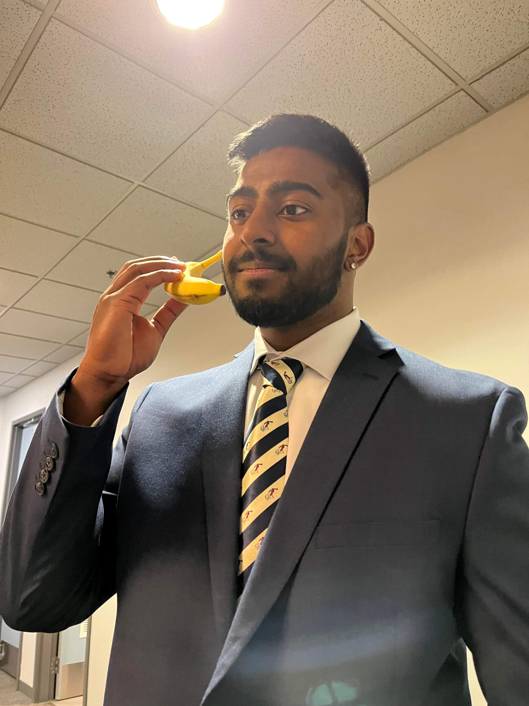

ABOUT ME!
My name is Ramith Rajan and I am currently a student at BCIT! I love the classes that I am currently taking. The one thing I would like to see more of here is some cheaper coffee stores. There is a Tim Horton's on the same block as the school but the people there are super scary.
After a couple of weeks, I have realized that midterms are much scarier than the people at the Tims. The amount of coffee I had consumed during that week was abysmal. I love coffee, especially when I get the time to make it at home. I love to make coffee for family and friends, especially lattes. I can't do the latte art though, but it still tastes good.